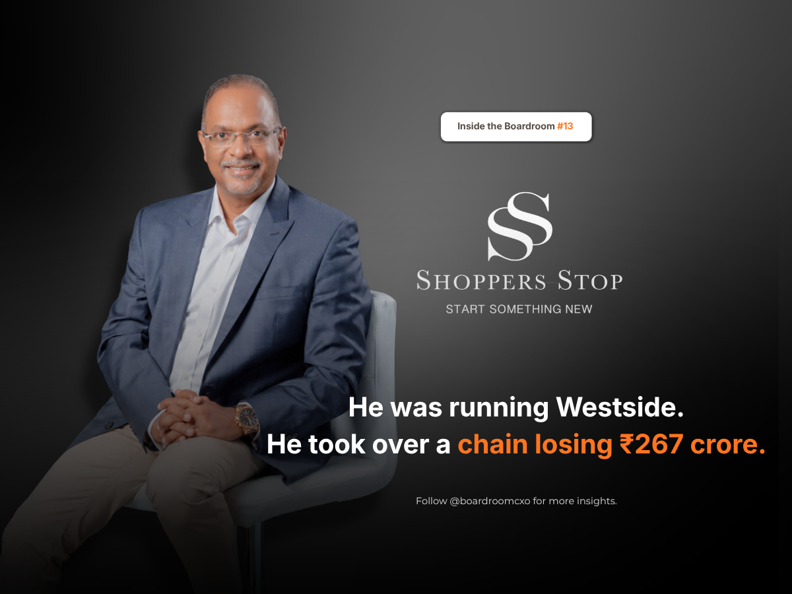

In November 2020, a man walked away from the top job at Westside to run Shoppers Stop. Department stores in India live inside shopping malls, and that year, malls were the last place anyone wanted to be. Footfall was running at a fifth of the previous year.
Nobody wanted that job.
Losing Half the Business in a Year
By March 2021, Shoppers Stop had lost 44 percent of its revenue in twelve months. Sales fell to ₹1,973 crore. The loss for the year was ₹267 crore.
Venu Nair had spent 27 years in retail before he took the job: Marks and Spencer Reliance, Madura, Arvind, Westside. The obvious move, for anyone with that résumé, was to wait for the malls to fill again and let the recovery do the work. Most leaders in that seat would have done exactly that.
He did not.
Nine Weeks to Renegotiate Everything
He set a cost target of ₹450 crore and went looking for it line by line. "We have renegotiated every cost," he told analysts in January 2021, nine weeks into the job. A rights issue was raised and oversubscribed, ₹125 crore of debt was repaid, and the company turned net cash, all while footfall was still a fraction of what it had been a year earlier.
Building Online While the Fire Was Still Burning
At the same time, he put more than 50 stores onto Amazon and pushed the live catalogue to 61,000 items, taking online from 1.5 percent of sales to 6 percent. Then, with the core business still being repaired, he committed to 10 to 12 new stores, most of them in tier 2 cities. Most turnaround plans fix one thing at a time. His ran three in parallel: cost, balance sheet, and growth.
The Numbers Turned, Then He Left
By the December 2021 quarter, Shoppers Stop reported a net profit of ₹77.32 crore against a loss of ₹25.11 crore a year earlier, with zero net debt. A year after that, quarterly revenue was back above ₹948 crore.
In August 2023, with the balance sheet clean, he resigned to spend more time with his family. The stock fell 8 percent that day.
The market does not price a leader while he is fixing things. It prices him on the day he leaves.
The Boardroom Read
Most boards wait for a crisis to be visible before they start looking for the leader who can fix it. By the time the numbers are frightening enough to justify an unconventional hire, the nine weeks that mattered most are already gone.
Nair's turnaround worked because three things happened at once, not in sequence: costs cut to the bone, the balance sheet repaired through a rights issue and debt repayment, and a real online push built alongside the recovery, not after it. That is a harder hire to make than most boards are prepared for, because the candidate willing to take it looks, on paper, like someone walking away from a stronger job into a weaker one.
The market does not remember who inherited the recovery. It remembers who was in the room before there was one.
Frequently Asked Questions
Why did Venu Nair take the top job at Shoppers Stop when nobody else wanted it?
In November 2020, Indian malls were running at about a fifth of their usual footfall and Shoppers Stop, a department store chain that lives inside malls, was in freefall. Venu Nair took the CEO role anyway, drawing on 27 years across Marks and Spencer Reliance, Madura, Arvind, and Westside.
How much revenue had Shoppers Stop lost before Venu Nair joined?
By March 2021, Shoppers Stop had lost 44% of its revenue in twelve months. Sales fell to ₹1,973 crore and the company posted a loss of ₹267 crore for the year.
What cost actions did Venu Nair take at Shoppers Stop?
He set a cost reduction target of ₹450 crore and went after it line by line. Nine weeks into the job, he told analysts the company had renegotiated every cost. A rights issue was raised and oversubscribed, ₹125 crore of debt was repaid, and the company turned net cash.
How did Shoppers Stop's online business grow under Venu Nair?
He put more than 50 stores onto Amazon and pushed the live catalogue to 61,000 items, taking online sales from 1.5% of revenue to 6%, while still committing to 10 to 12 new physical stores, most of them in tier 2 cities.
What happened to Shoppers Stop's financials after the turnaround?
By the December 2021 quarter, Shoppers Stop reported a net profit of ₹77.32 crore against a loss of ₹25.11 crore a year earlier, with zero net debt. A year later, quarterly revenue was back above ₹948 crore.
Why did Shoppers Stop's stock fall when Venu Nair resigned in 2023?
He resigned in August 2023 with the balance sheet clean, and the stock fell 8% that day. The market tends not to price a turnaround leader while he is fixing the business, it prices him on the day he leaves.
Related Reading
He Ran India's Biggest Luggage Company. Then He Bought the Rival One-Tenth Its Size.
Read → R · 02 Founder Leadership · September 2026Costs Were Rising Everywhere. Sameer Khetarpal Cut Domino's Prices Anyway.
Read → R · 03 Founder Leadership · August 2026C K Venkataraman: How Tanishq Fixed a Decade of Being Wrong About India
Read →Need a leader who will take the job before the recovery is visible?
Whether it's a retail turnaround, a balance sheet under pressure, or a growth story that needs rebuilding from the ground up, we place the CEOs, CFOs, and ops leaders who take the fix on, not the ones who wait for it to be safe.
Brief Us on a Mandate